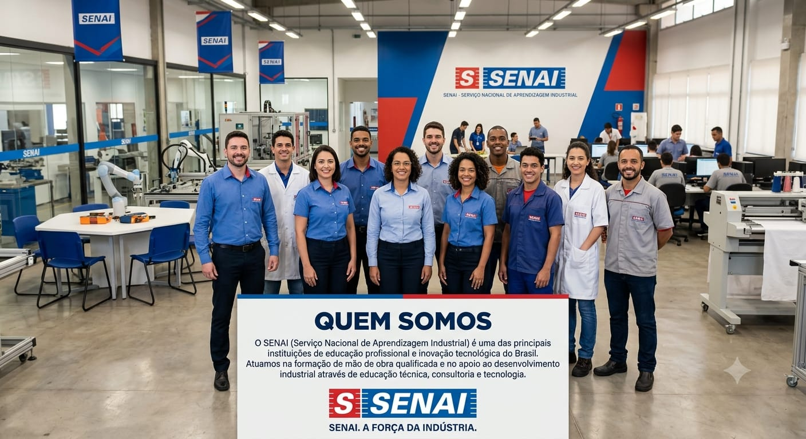

O SENAI (Serviço Nacional de Aprendizagem Industrial) é a maior rede de educação profissional da América Latina, com 60 institutos de tecnologia espalhados pelo Brasil, apoiando a indústria nacional em diversos setores.
Em Pernambuco, o SENAI foi fundado em 16 de abril de 1943, inicialmente cobrindo a 2ª Região, que reunia os estados de Pernambuco, Paraíba e Alagoas, além do Território de Fernando de Noronha. As primeiras turmas funcionaram nas instalações da Escola Técnica do Recife (atual IFPE), formando mão de obra qualificada para atender às necessidades da indústria da época, com cursos como Serralheiro, Torneiro Mecânico, Moldador e Soldador.
Hoje, o SENAI Pernambuco integra o Sistema FIEPE (Federação das Indústrias do Estado de Pernambuco), ao lado de SESI, IEL e CIEPE, um conjunto de instituições dedicadas a fortalecer o setor industrial pernambucano, que reúne cerca de 15 mil indústrias no estado.
Missão: promover a educação profissional e tecnológica, a inovação e a transferência de tecnologias industriais, contribuindo para elevar a competitividade da indústria brasileira.
Marca de referência: ser reconhecido como provedor de inovação e de soluções tecnológicas e educacionais para a indústria de Pernambuco e da região.
Com mais de 80 anos de atuação, o SENAI-PE oferece cursos técnicos, de aperfeiçoamento e qualificação profissional, além de cursos de graduação e pós-graduação por meio da sua Faculdade de Tecnologia, sediada em Recife. A instituição também conta com institutos de tecnologia especializados (Alimentos e Meio Ambiente, e Materiais e Processos Produtivos), que prestam serviços técnicos e de consultoria para o setor produtivo.